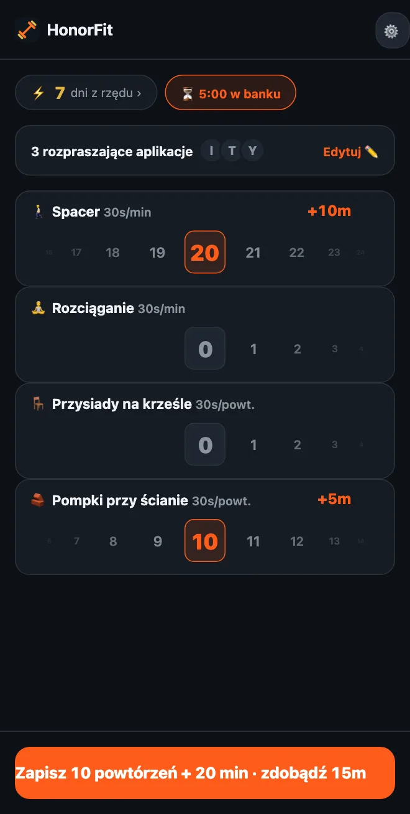

Nie możesz robić pompek? Łagodne ćwiczenia do odblokowania aplikacji
Cześć wszystkim! HonorFit jest znany głównie jako blokada aplikacji za pompki: twoje aplikacje są zablokowane, dopóki nie zrobisz kilku powtórzeń i sam ich nie zapiszesz. Ale jeśli twoje nadgarstki, barki czy kolana nie bardzo to lubią, jeśli cały dzień siedzisz przy biurku albo po prostu pompki teraz nie wchodzą w grę, to totalnie w porządku.
Dla mnie pompki nigdy nie były tak naprawdę najważniejsze. Chodzi o mały próg zwalniający między tobą a scrollowaniem, taki, który przy okazji robi ci dobrze. Spacer dookoła bloku załatwia to równie dobrze. Oto jak ustawić HonorFit pod rzeczy, które naprawdę jesteś w stanie robić.
Zacznij od wbudowanych
Na start dostajesz cztery ćwiczenia: pompki, brzuszki, podciąganie i przysiady. Z nich najłagodniejsze są przysiady, a każdy jest wart 30 sekund.
A skoro to system na słowo honoru, nikt nie sprawdza, jak wygląda twój przysiad. Jeśli pełny przysiad to za dużo, wstawanie z krzesła i siadanie z powrotem też się liczy. Tak samo z pompkami przy ścianie albo blacie w kuchni. Ty decydujesz, czym jest powtórzenie, i po prostu uczciwie je zapisujesz.
Wybierz własne (do 3 za darmo)
Od wersji 1.15.0 możesz za darmo zmieniać nazwy ćwiczeń i je usuwać, ustalać, ile daje każde z nich, i dodać do 3 własnych. Pro (w USA 3 USD miesięcznie albo 19,99 USD jednorazowo; ceny różnią się w zależności od kraju i waluty, a sklep pokaże ci twoją) pozwala dodać ich tyle, ile chcesz. Dojdziesz tam przez zębatkę na ekranie głównym, a potem kartę Ćwiczenia. Każdy krok edytora opisałem tutaj. Na takie rzeczy ja bym patrzył.
Treningi na czas (zapisywane w minutach)
Przestaw dowolne ćwiczenie na Minuty albo stuknij jedną z propozycji z ⏱. Te, które tu pasują:
- 🚶 Spacer. Mój ulubiony do tego. Chyba najłatwiejsza wygrana, jaka istnieje.
- 🧘 Joga albo 🤸 Pilates, albo dodaj ćwiczenie o nazwie Rozciąganie, jeśli to bardziej to, co robisz.
- 🏊 Pływanie i 🚴 Rower, oba łagodne dla stawów.
- 🪷 Medytacja. To nie ćwiczenie, ale jest na liście, a dziesięć spokojnych minut to całkiem niezła wymiana za dziesięć minut TikToka.
Treningi na czas startują od 30 sekund w aplikacjach za minutę, więc 20-minutowy spacer daje 10 minut. Koło liczy pełne minuty, do 100 naraz.
Ćwiczenia przy biurku (zapisywane w powtórzeniach)
Stuknij ＋ Dodaj ćwiczenie i wpisz nazwę. Kilka, które sprawdzą się w biurze albo w małym mieszkaniu, bez sprzętu:
- Przysiady na krześle (wstawanie z krzesła): wstań z krzesła i usiądź z powrotem.
- Pompki przy ścianie albo pompki przy biurku: pompki o ścianę albo stabilne biurko. Im wyżej oparcie, tym łatwiej.
- Wspięcia na palce: w górę na palce i z powrotem. Możesz je robić, czekając na mikrofalówkę.
- Marsz w miejscu: propozycja Skip A, tylko wolniej. Zmień nazwę, jeśli chcesz.
- Mostek biodrowy i ćwiczenia Kegla: cicho, bez sprzętu, a ćwiczenia Kegla możesz robić na spotkaniu tak, że nikt się nie zorientuje. Napisałem o nich cały wpis.
Ćwiczenia w podporze (deska, krzesełko)
Skoro koło minut liczy pełne minuty, 20-sekundowa deska nie bardzo tam pasuje. Ćwiczenia w podporze zostawiłbym na Powtórzeniach i ustalił, czym jest powtórzenie, np. „jedno 20-sekundowe utrzymanie”. Deska i Krzesełko są w propozycjach.
Ile powinno dawać każde z nich?
Nowe ćwiczenia startują od 30 sekund za powtórzenie. Możesz zwiększać albo zmniejszać o 5 sekund. Kilka punktów wyjścia:
| Ćwiczenie | Liczy | Daje | Na przykład |
|---|---|---|---|
| 🚶 Spacer | Minuty | 30s za minutę | 20-minutowy spacer = 10 min |
| 🧘 Rozciąganie | Minuty | 30s za minutę | 10 minut = 5 min |
| 🪑 Przysiady na krześle | Powtórzenia | 30s za powtórzenie | 10 = 5 min |
| 🧱 Pompki przy ścianie | Powtórzenia | 30s za powtórzenie | 10 = 5 min |
| Wspięcia na palce | Powtórzenia | 10–15s za powtórzenie | 20 po 15s = 5 min |
| Deska | Powtórzenia (1 powtórzenie = 20s utrzymania) | 1 min za powtórzenie | 3 utrzymania = 3 min |
To tylko moje strzały, co wydaje się fair. Dobra liczba to taka, którą naprawdę zapłacisz, zamiast naciągać. Jeśli spacer to nawyk, który najbardziej chcesz zbudować, niech będzie wart więcej, np. 1 minutę za minutę.

Kilka zestawów do skopiowania
- Dzień przy biurku: Przysiady na krześle, Pompki przy ścianie, Wspięcia na palce, Spacer.
- Łagodny: Spacer, Rozciąganie, Przysiady na krześle, Pompki przy ścianie (to ten ze zrzutu ekranu powyżej).
- Spokojny: Spacer, Joga, Medytacja.
- Ciche mieszkanie: Mostek biodrowy, Ćwiczenia Kegla, Przysiady na krześle, Spacer.
Trzymałbym się trzech, czterech, bo każde dostaje własne koło na ekranie głównym. W darmowej wersji dojdziesz do czterech, zmieniając nazwy wbudowanych (Przysiady na Przysiady na krześle, Pompki na Pompki przy ścianie) i dodając resztę jako swoje 3 własne.
A jeśli masz kontuzję, coś cię boli albo masz jakiś problem zdrowotny, zapytaj lekarza albo fizjoterapeutę, co jest dla ciebie OK. Robię blokadę aplikacji; nie jestem gościem, którego warto pytać o twoje kolana, haha.
HonorFit Blocker to darmowa blokada aplikacji na iPhone'a i Androida. Na słowo honoru, bez kamery, nic nie opuszcza twojego telefonu. Treningi na czas i do 3 własnych ćwiczeń są za darmo, a Pro znosi limit. Nie jest dla każdego, ale może komuś z was się spodoba!